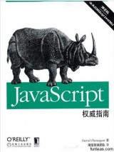

JavaScript权威指南
发布时间：2017年11月19日16:40。
标签：编程
《JavaScript权威指南》是2007年机械工业出版社出版的图书，作者是弗拉纳根（David Flanagan，美）。
本书全面介绍了JavaScript语言的核心，以及Web浏览器中实现的遗留和标准的DOM。
封面

目录
《javascript权威指南(第6版)》
前言 1
第1章 javascript概述 5
1.1 javascript语言核心 8
1.2 客户端javascript 12
第一部分 javascript 语言核心
第2章 词法结构 25
2.1 字符集 25
2.2 注释 27
2.3 直接量 27
2.4 标识符和保留字 28
2.5 可选的分号 30
第3章 类型、值和变量 32
3.1 数字 34
3.2 文本 38
3.3 布尔值 43
3.4 null和undefined 44
3.5 全局对象 45
3.6 包装对象 46
3.7 不可变的原始值和可变的对象引用 47
3.8 类型转换 48
3.9 变量声明 55
3.10 变量作用域 56
第4章 表达式和运算符 60
4.1 原始表达式 60
4.2 对象和数组的初始化表达式 61
4.3 函数定义表达式 62
4.4 属性访问表达式 63
4.5 调用表达式 64
4.6 对象创建表达式 64
4.7 运算符概述 65
4.8 算术表达式 69
4.9 关系表达式 74
4.10 逻辑表达式 79
4.11 赋值表达式 81
4.12 表达式计算 83
4.13 其他运算符 86
第5章 语句 91
5.1 表达式语句 92
5.2 复合语句和空语句 92
5.3 声明语句 94
5.4 条件语句 96
5.5 循环 101
5.6 跳转 106
5.7 其他语句类型 113
5.8 javascript语句小结 116
第6章 对象 118
6.1 创建对象 120
6.2 属性的查询和设置 123
6.3 删除属性 127
6.4 检测属性 128
6.5 枚举属性 130
6.6 属性getter和setter 132
6.7 属性的特性 134
6.8 对象的三个属性 138
6.9 序列化对象 141
6.10 对象方法 142
第7章 数组 144
7.1 创建数组 144
7.2 数组元素的读和写 145
7.3 稀疏数组 147
7.4 数组长度 148
7.5 数组元素的添加和删除 149
7.6 数组遍历 149
7.7 多维数组 151
7.8 数组方法 152
7.9 ecmascript 5中的数组方法 156
7.10 数组类型 160
7.11 类数组对象 161
7.12 作为数组的字符串 163
第8章 函数 165
8.1 函数定义 166
8.2 函数调用 168
8.3 函数的实参和形参 173
8.4 作为值的函数 178
8.5 作为命名空间的函数 181
8.6 闭包 182
8.7 函数属性、方法和构造函数 188
8.8 函数式编程 194
第9章 类和模块 201
9.1 类和原型 202
9.2 类和构造函数 203
9.3 javascript中java式的类继承 207
9.4 类的扩充 210
9.5 类和类型 212
9.6 javascript中的面向对象技术 217
9.7 子类 230
9.8 ecmascript 5 中的类 239
9.9 模块 248
第10章 正则表达式的模式匹配 253
10.1 正则表达式的定义 253
10.2 用于模式匹配的string方法 261
10.3 regexp对象 263
第11章 javascript的子集和扩展 267
11.1 javascript的子集 268
11.2 常量和局部变量 271
11.3 解构赋值 274
11.4 迭代 276
11.5 函数简写 285
11.6 多catch 从句 285
11.7 e4x: ecmascript for xml 286
第12章 服务器端javascript 290
12.1 用rhino脚本化java 291
12.2 用node实现异步i/o 297
第二部分 客户端javascript
第13章 web浏览器中的javascript 309
13.1 客户端javascript 309
13.2 在html里嵌入javascript 313
13.3 javascript程序的执行 319
13.4 兼容性和互用性 326
13.5 可访问性 333
13.6 安全性 334
13.7 客户端框架 339
第14章 window对象 341
14.1 计时器 342
14.2 浏览器定位和导航 343
14.3 浏览历史 345
14.4 浏览器和屏幕信息 346
14.5 对话框 348
14.6 错误处理 351
14.7 作为window对象属性的文档元素 351
14.8 多窗口和窗体 353
第15章 脚本化文档 361
15.1 dom概览 362
15.2 选取文档元素 364
15.3 文档结构和遍历 371
15.4 属性 375
15.5 元素的内容 378
15.6 创建、插入和删除节点 382
15.7 例子：生成目录表 387
15.8 文档和元素的几何形状和滚动 389
15.9 html表单 396
15.10 其他文档特性 404
第16章 脚本化css 410
16.1 css概览 411
16.2 重要的css属性 416
16.3 脚本化内联样式 427
16.4 查询计算出的样式 431
16.5 脚本化css类 433
16.6 脚本化样式表 436
第17章 事件处理 440
17.1 事件类型 442
17.2 注册事件处理程序 451
17.3 事件处理程序的调用 454
17.4 文档加载事件 459
17.5 鼠标事件 461
17.6 鼠标滚轮事件 465
17.7 拖放事件 468
17.8 文本事件 475
17.9 键盘事件 478
第18章 脚本化http 484
18.1 使用xmlhttprequest 487
18.2 借助[script]发送http请求：jsonp 505
18.3 基于服务器端推送事件的comet技术 508
第19章 jquery类库 514
19.1 jquery基础 515
19.2 jquery的getter和setter 522
19.3 修改文档结构 528
19.4 使用jquery处理事件 531
19.5 动画效果 542
19.6 jquery中的ajax 550
19.7 工具函数 563
19.8 jquery选择器和选取方法 566
19.9 jquery的插件扩展 574
19.10 jquery ui类库 577
第20章 客户端存储 579
20.1 localstorage和sessionstorage 581
20.2 cookie 586
20.3 利用ie userdata持久化数据 592
20.4 应用程序存储和离线web应用 594
第21章 多媒体和图形编程 606
21.1 脚本化图片 606
21.2 脚本化音频和视频 608
21.3 svg：可伸缩的矢量图形 615
21.4 [canvas]中的图形 623
第22章 html5 api 658
22.1 地理位置 659
22.2 历史记录管理 662
22.3 跨域消息传递 668
22.4 web worker 671
22.5 类型化数组和arraybuffer 678
22.6 blob 682
22.7 文件系统api 691
22.8 客户端数据库 696
22.9 web套接字 704
第三部分 javascript核心参考
javascript核心参考 711
第四部分 客户端javascript参考客户端javascript参考 847